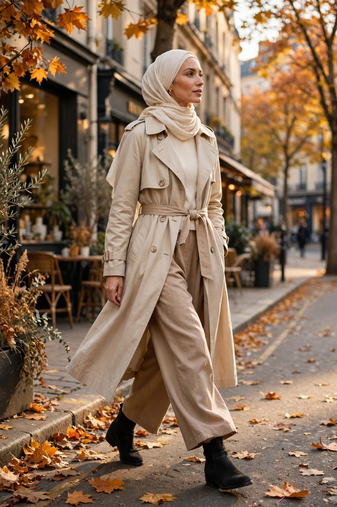
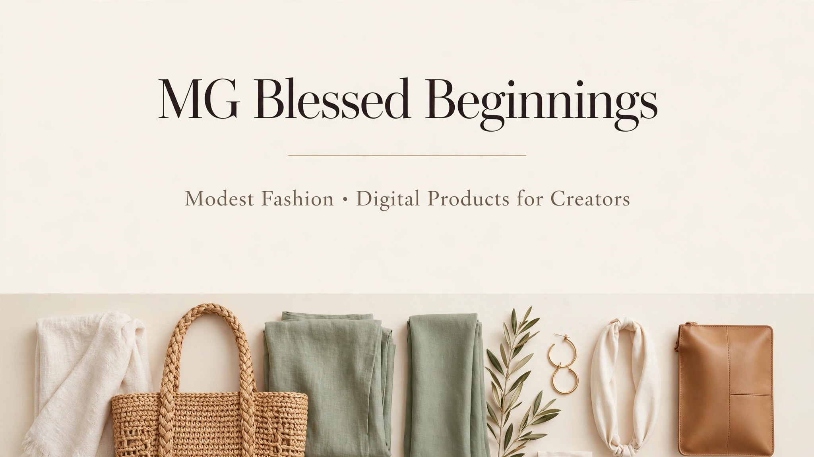
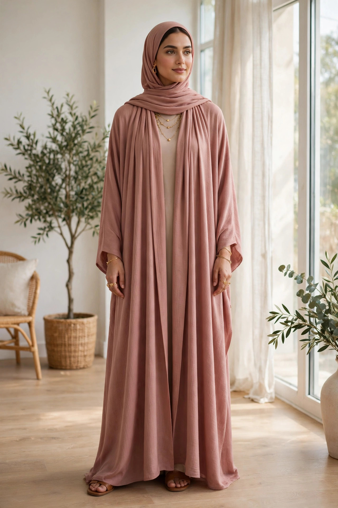
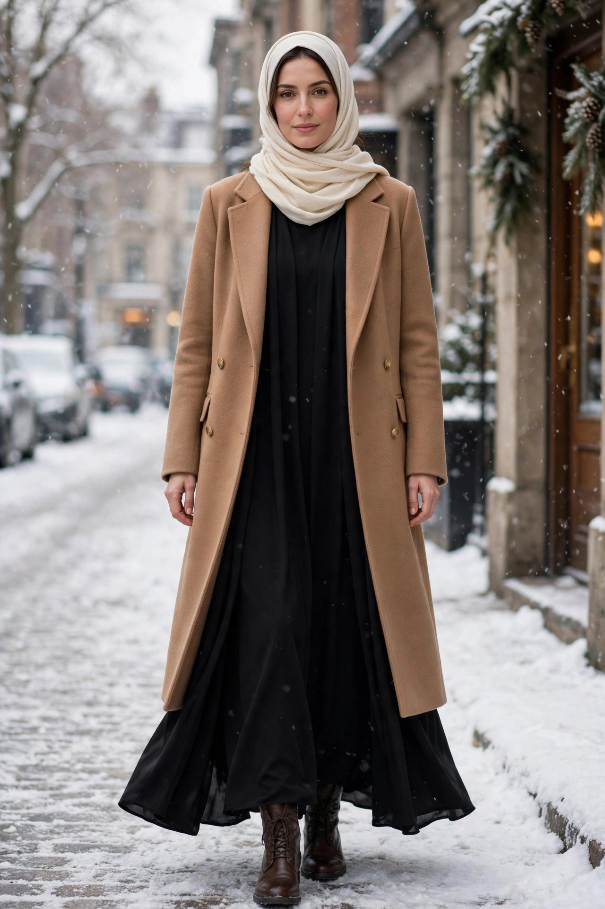
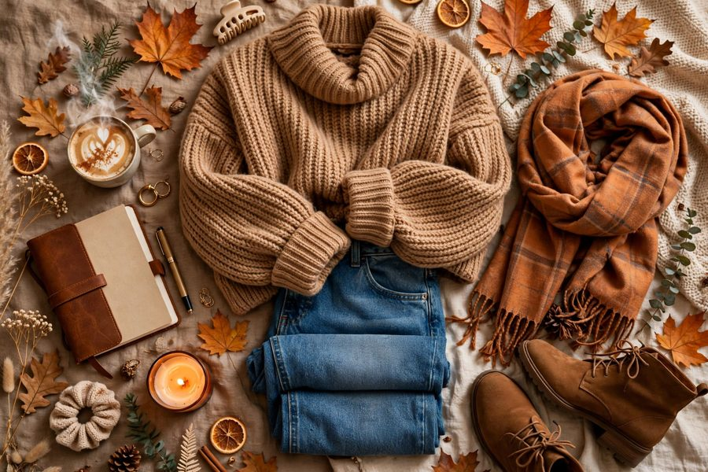
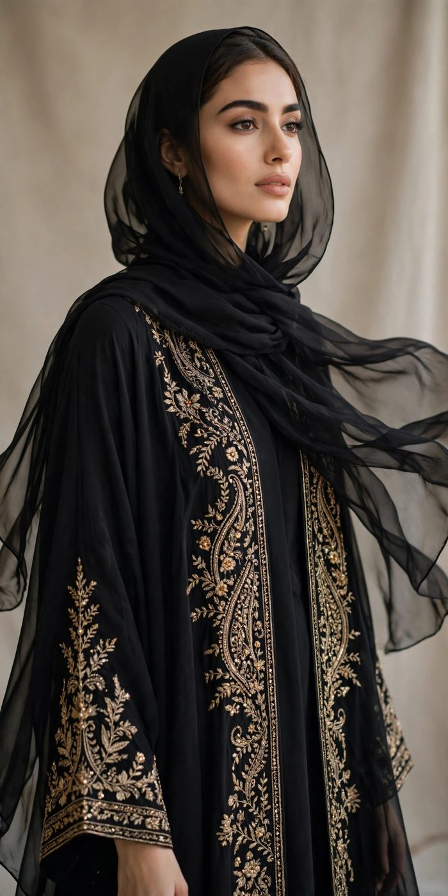
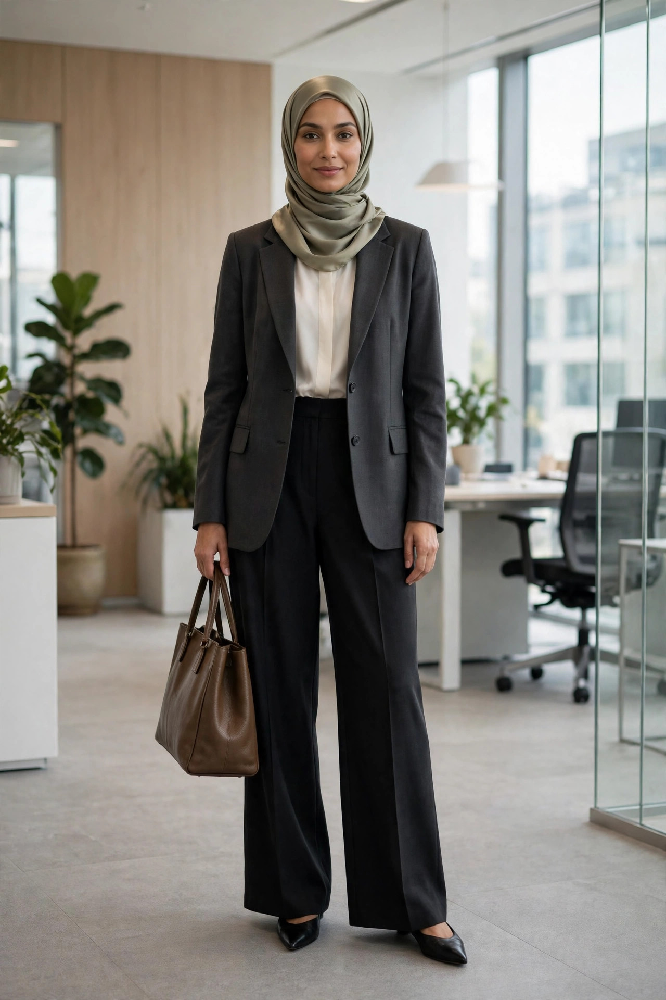
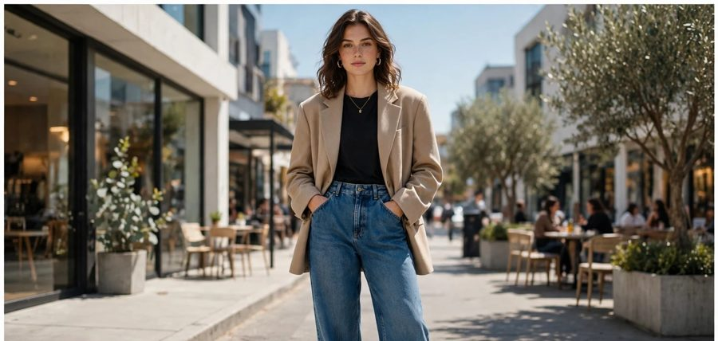

Category
Fall Outfits
Trench coats, oversized sweaters, ankle boots and warm brown-and-camel layers.
fall outfits · fall outfit ideas · fall fashion trends
MG Blessed Beginnings
Modest & everyday fashion — outfit ideas you can actually wear
Fall outfits • Modest fashion • Hijab styles
Looking for cute fall outfits, casual fall outfits for real life, or an abaya that feels elegant without trying too hard? Start with the season’s most-loved guide, then browse outfit ideas by category — every look comes with colors, layering, shoes and accessories, so you can recreate it from your own closet first.
Read the Featured Posts Browse Pinterest IdeasPopular right now: fall outfits for women · aesthetic fall outfits · eid abaya 2026 · pashmina abaya · modest capsule wardrobe


Trending outfit categories
Six categories built from the keywords readers actually search — tap one to jump to its posts.
Category
Trench coats, oversized sweaters, ankle boots and warm brown-and-camel layers.
fall outfits · fall outfit ideas · fall fashion trends
Category
Easy everyday looks for college, errands, moms and weekends — comfort first, never sloppy.
casual fall outfits · casual modest outfits for college
Category
Ramadan outfits, Eid dresses, winter abaya outfits and summer modest dresses, in season.
eid outfits for women · ramadan outfits · winter abaya outfits
Category
Oversized blazers, wide-leg jeans, sneakers and abaya-over-jeans styling for the city.
modest streetwear women · oversized blazer hijab outfit
Category
Complete, copy-the-look formulas: colors, layers, footwear and accessories for each one.
outfit ideas · hijabi outfits · modest outfits
Category
Abaya designs, hijab styles and modest dresses — the heart of MG Blessed Beginnings.
modest fashion · hijab styles · abaya designs · modest dresses
Featured blog posts

Modest Fashion • New
20 warm winter hijab styles — wool, pashmina & jersey wraps with no-slip layering tips and cozy modest looks for cold weather.
Keyword: winter hijab styles · wool hijab · pashmina hijab

Modest Fashion
22 complete winter looks — casual, office, evening and smart layering — with fabrics, layering tips and styling notes for the cold season.
Keyword: winter abaya outfits · modest winter outfits · abaya styling winter

Fall Outfits
27 complete looks — casual, work-ready, feminine and weekend — each with styling, layering, footwear and accessory notes.
Keyword: fall outfits · cute fall outfits · aesthetic fall outfits

Modest Fashion
Embroidered, lace and satin abayas for Eid and special occasions, plus how to style an abaya for a wedding.
Keyword: eid abaya 2026 · lace abaya designs · abaya designs
Hijab Styles
Chiffon vs. jersey, the best no-slip undercaps, and how to tie a hijab for a round face — start here if you are new.
Keyword: hijab styles · hijab tutorial · best chiffon hijab for beginners
Casual Outfits
Repeatable formulas with jeans, blazers, maxi dresses and sneakers — including modest gym wear that actually works.
Keyword: casual modest outfits for college · modest outfits

Work Outfits
Polished layers, quiet-luxury neutrals and two-piece modest sets that read professional from 9 to 5.
Keyword: modest work outfits for hijabi women · quiet luxury modest fashion
Emerging Trend
A soft, drapey alternative to standard abaya fabrics, styled for day, evening and Eid.
Keyword: pashmina abaya · satin abaya trend · printed abaya 2026
Street style & seasonal fashion

Street Style
Balance one oversized piece with one clean line. Add white sneakers for day, ankle boots after dark — and try the same blazer over an abaya or maxi dress for a modest streetwear twist.
Keywords: modest streetwear women · abaya over jeans styling · leather jacket hijab style
Seasonal Fashion
Fall: fall hijab outfits, suede modest outfits, back-to-school modest outfits.
Winter: winter abaya outfits, winter hijab styles, modest holiday party outfits.
Ramadan & Eid: ramadan outfits, eid hijab styles, elegant kaftan dresses for Eid.
Summer: modest summer dresses, linen abaya for summer, modest vacation outfits and burkini styles.
Plan Pins 6–8 weeks before each season — that is when Pinterest searches rise.
Pinterest-inspired ideas
Short, visual ideas in the format Pinterest readers save — each one links back to its category above. Follow on Pinterest: @mgblessedbeginnings
Pin idea: Minimalist chic — trench, cream hijab, wide-leg trousers, ankle boots. Cute & casual fall outfits.
Pin idea: Cozy autumn flat lay — camel knit, denim, rust scarf. Your autumn wardrobe guide.
Pin idea: Black abaya with gold embroidery for Eid and weddings. Elegant abaya designs.
Pin idea: Everyday street style — oversized blazer, wide-leg jeans, sneakers. Everyday fall fashion.
Outfit ideas — keyword index
| Group | Keywords from your research | Use for |
|---|---|---|
| Primary | fall outfits, fall outfits for women, modest fashion, hijab, hijab styles, abaya, abaya designs, modest dresses, hijabi outfits, kaftan, maxi dresses | Category pages & H1/H2 headings |
| Long-tail | cute fall outfits, casual fall outfits, fall outfit ideas, aesthetic fall outfits, how to style an abaya for a wedding, modest work outfits for hijabi women, plus size abaya styles, open abaya vs closed abaya, how to tie hijab for round face | Individual blog posts & Pin titles |
| Seasonal | eid abaya 2026, ramadan outfits, eid outfits for women, fall hijab outfits, winter abaya outfits, summer modest dresses, umrah outfits for women, modest wedding guest dresses | Seasonal posts, published 6–8 weeks early |
| Emerging | pashmina abaya, lace abaya, butterfly abaya cut, satin abaya trend, modest capsule wardrobe, suede modest outfits, two-piece modest sets, abaya over jeans styling, hijab magnets styling | Fresh Pins & trend posts |
Newsletter
No spam — just the week’s best fall outfits, modest fashion finds and a new Pin to save.
Free with signup: Winter Modest Fashion Checklist — 40 tick-box items for abaya colours, fabrics, hijab wraps & layering. Join below and get it free after confirming your email.
MG Blessed Beginnings helps women in the US dress modestly and stylishly on a real-life schedule — school runs, workdays, Eid celebrations and everything in between. Every guide starts from pieces you likely already own, then adds one intentional update at a time.
Follow on Pinterest